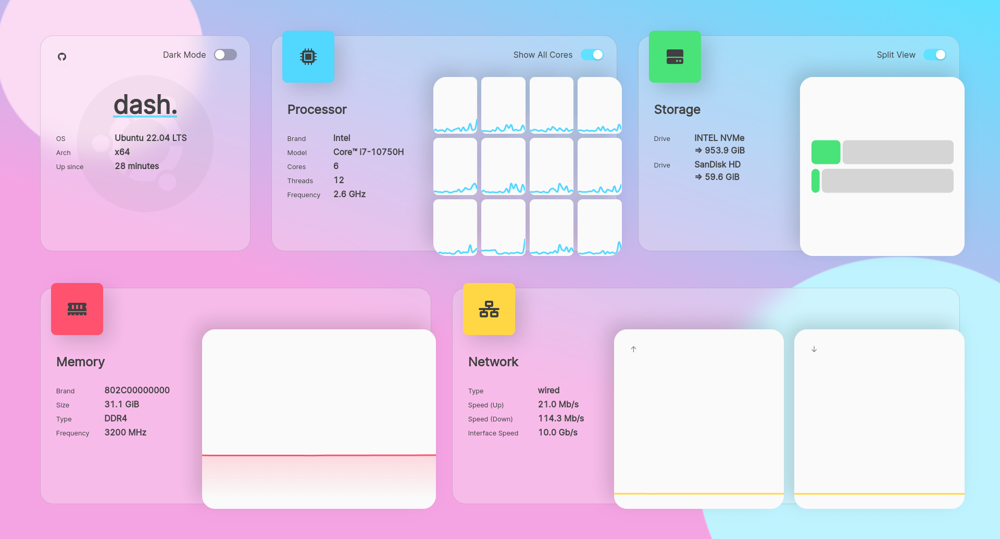

dash.
a modern server dashboard
docker container run -it \
-p 80:3001 \
-v /etc/os-release:/etc/os-release:ro \
-v /proc/1/ns/net:/mnt/host_ns_net:ro \
-v /media:/mnt/host_media:ro \
-v /mnt:/mnt/host_mnt:ro \
--privileged \
mauricenino/dashdot
dash. is beautiful

dash. is feature-rich
- Dark/Light-Mode
- Customizable Widgets
- Beautiful Animations and Styles
- Support for multiple architectures
- A lot of personalization options